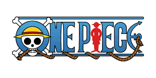
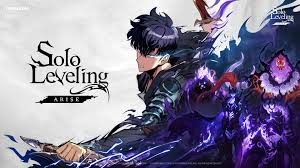
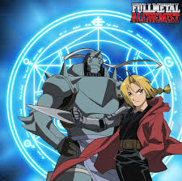
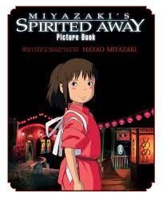

One Piece
Adventure / Anime Series
This is one of my favorites because of the adventure, world-building, and long-term story.

Adventure / Anime Series
This is one of my favorites because of the adventure, world-building, and long-term story.
Action / Anime Series
I enjoy the animation style, emotional story, and the fight scenes.

Action / Fantasy
This one stands out because of the power progression and intense main character development.

Adventure / Fantasy
I like this anime because it has a strong story, serious themes, and memorable characters.
Action / Dark Fantasy
This anime is unique because it feels different from a lot of other shows and has a strong visual style.

Studio Ghibli Film
This movie is meaningful because of its creativity, atmosphere, and beautiful animation.